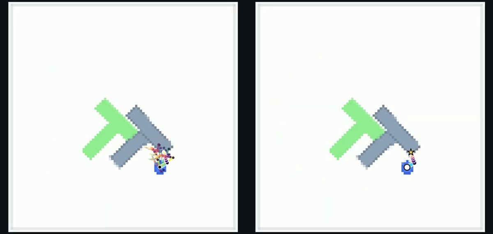
LDiPLarge Discrete Policy: Advancing Explicit Behavior Modeling with Stochastic Iterative Scoring
A discrete policy selects plausible actions through repeated stochastic scoring and candidate pruning.
I’m a PhD student in EECS at UC Berkeley, advised by Prof. Shankar Sastry and affiliated with Berkeley AI Research (BAIR).
Previously, I was a Research Engineer at NVIDIA. I received my master’s in Computer Vision from Carnegie Mellon University and my bachelor’s in Artificial Intelligence from Shanghai Jiao Tong University.
My research spans robot learning, humanoid loco-manipulation, and autonomous driving. I aim to build scalable, generalizable, and reliable robotic systems with a clear path to commercialization.
Enable JavaScript to switch between Selected and All and play the teasers. All papers are listed below.

LDiPA discrete policy selects plausible actions through repeated stochastic scoring and candidate pruning.
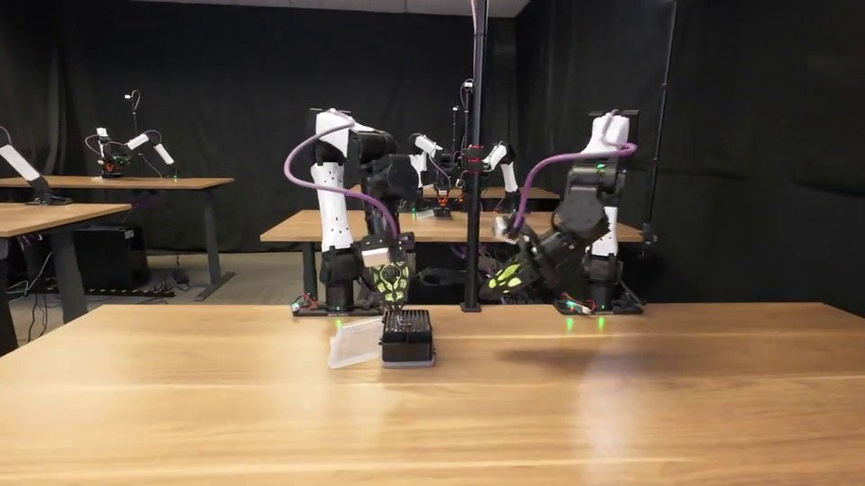
ENPIRECoding agents improve physical robot policies through automated resets, rollouts, verification, and algorithm refinement.
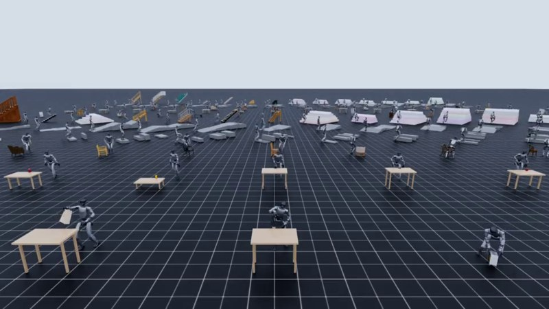
GRAILVideo world models generate humanoid training interactions grounded in known 3D scenes for visual sim-to-real learning.
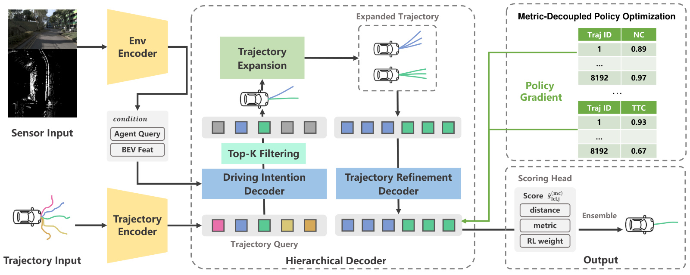
Hierarchical diffusion and metric-decoupled reinforcement learning improve end-to-end driving trajectories.
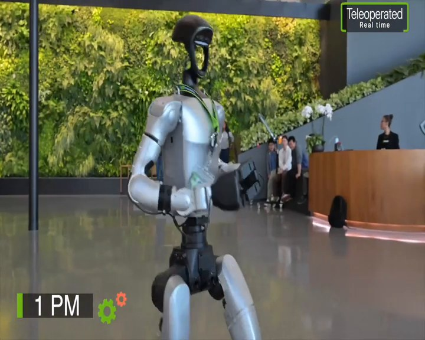
SONICScaling motion data, model capacity, and compute produces a generalist humanoid whole-body controller.
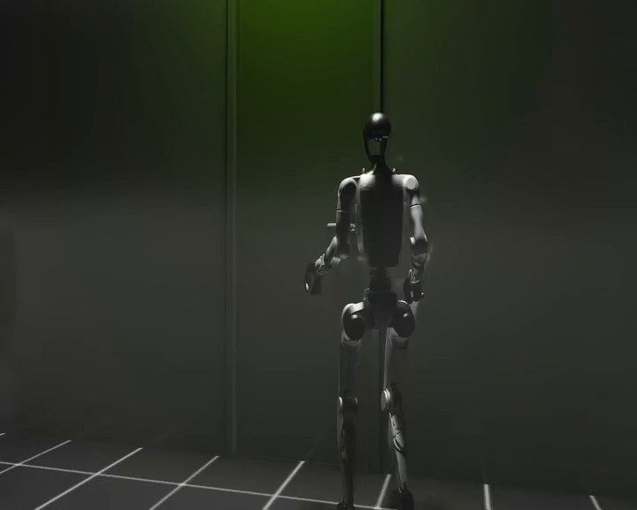
DoorManAn RGB-based humanoid policy learns door-opening skills in simulation and transfers to varied real-world doors.
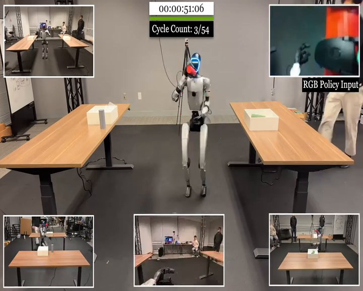
VIRALLarge-scale visual simulation trains humanoid loco-manipulation policies that transfer directly to real hardware.
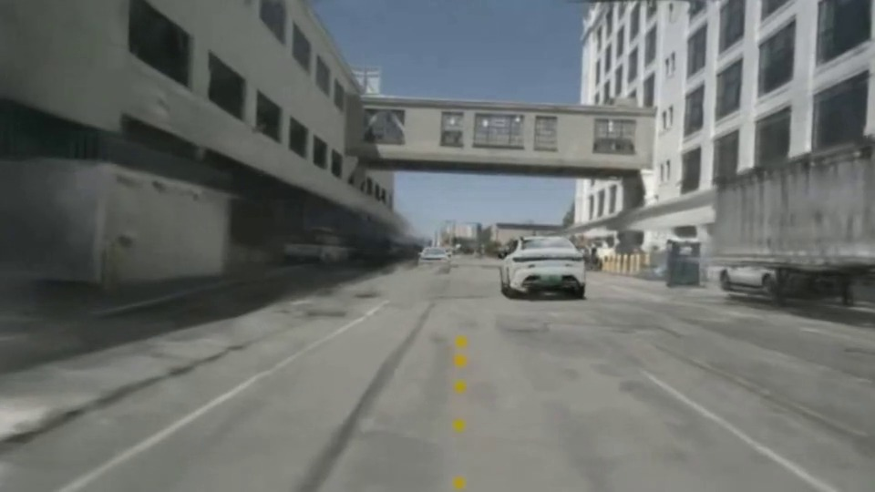
ZTRSTrajectory scoring and exhaustive policy optimization enable end-to-end driving without human demonstrations.
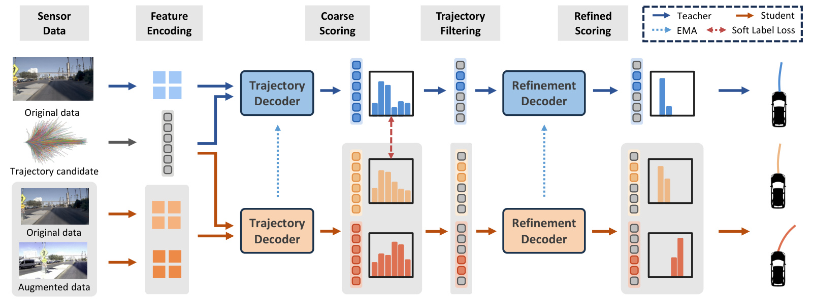
Coarse-to-fine candidate filtering improves precise trajectory selection for end-to-end planning.
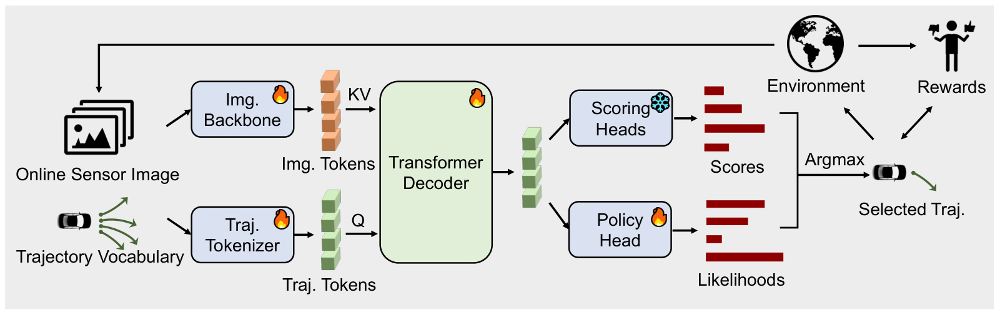
Reinforcement fine-tuning adapts trajectory scorers for closed-loop driving in photorealistic simulation.
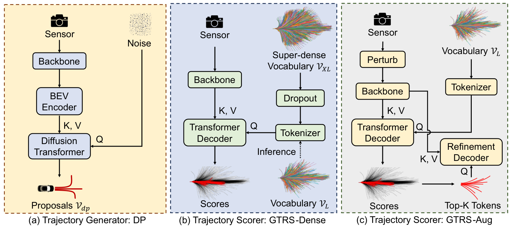
Generalized trajectory scoring combines coarse and fine candidate evaluation for multimodal driving plans.
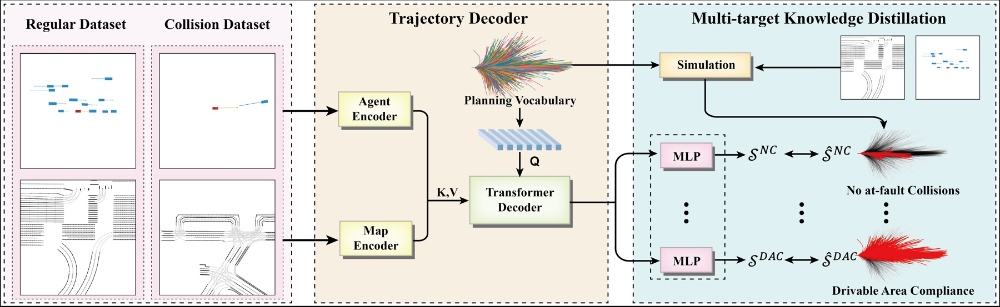
Collision scenario generation and safety-oriented training improve planning in collision-prone driving scenes.
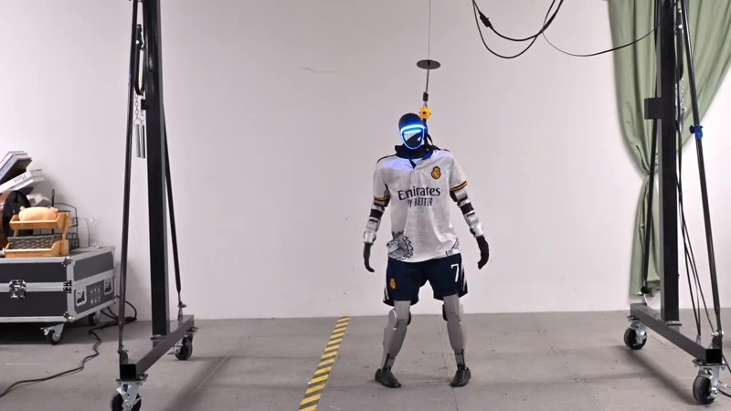
ASAPA learned residual action model aligns simulated physics with real hardware for agile humanoid motion.
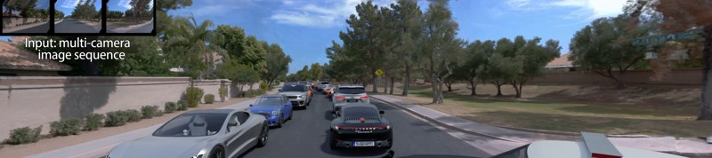
ChatSimCollaborating language-model agents edit photorealistic driving scenes from natural-language instructions.
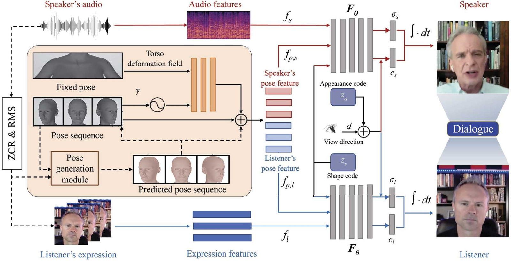
A neural radiance field models speakers and listeners to generate face-to-face avatar conversations.
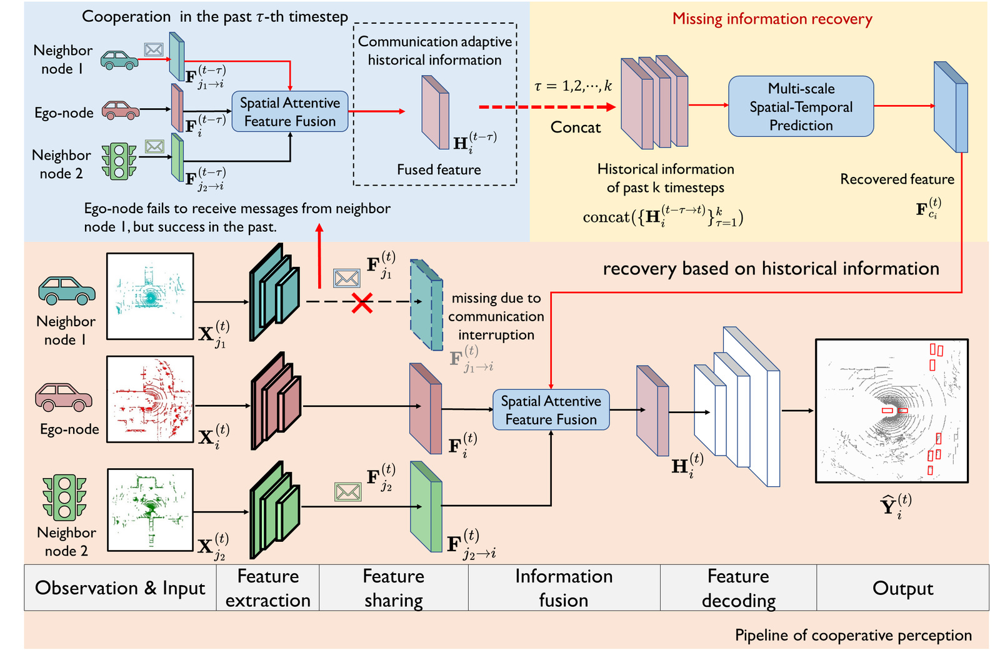
Historical cooperative information helps recover missing perception messages during V2X communication interruptions.
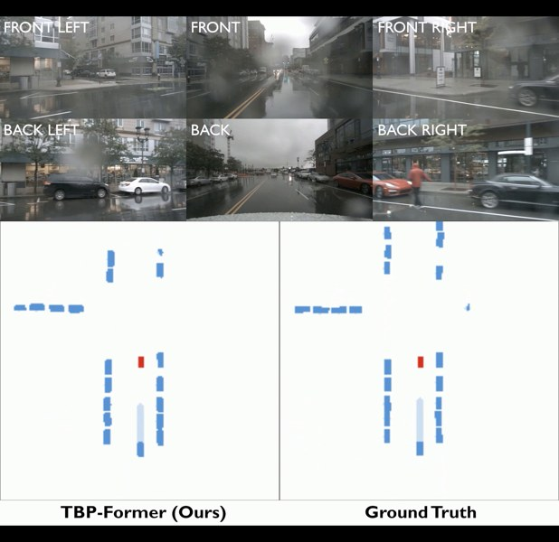
TBP-FormerA temporal bird’s-eye-view pyramid combines spatial and temporal features for joint perception and prediction.
No matching papers. Try a different search or switch to All.
University of California, Berkeley
PhD student in EECS · Berkeley AI Research (BAIR)
Advisor: Prof. Shankar Sastry
Current
Featured in Jensen Huang’s GTC keynote
Our autonomous driving work was featured at GTC Paris 2025.
June 2025